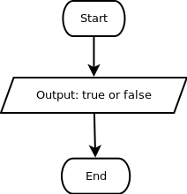

Hasil dari operasi boolean OR hanya akan benar jika kedua operand nya bernilai benar. Jadi false OR false akan menghasilkan nilai false, selain itu operasi OR akan menghasilkan nilai true.
Dalam kehidupan sehari-hari, seringkali kata OR serta atau muncul pada berbagai syarat dan ketentuan. Misalnya, seorang nasabah berhak mendapatkan piring cantik jika sudah menabung selama 10 tahun atau jumlah saldo minimumnya adalah Rp 100.000,-.
Jika Anton sudah menabung selama 11 tahun, dan saldo minimumnya Rp 3.000,-, maka Anton akan mendapatkan piring cantik. Di sisi lain, Budi yang baru menabung 3 tahun dengan saldo minimum Rp 200.000,- pun juga mendapatkan piring cantik. Piring cantik juga didapatkan oleh Chika yang menabung selama 12 tahun dengan saldo minimum Rp 101.000,- Hanya Dodi lah yang tidak mendapatkan piring cantik, karena saldo minimumnya hanya Rp 9.000,- dan baru menabung 3 tahun.

Saya mau cari pacar yang cantik
atau sexy
atau bisa masak masakan eropa
atau tidak cengeng
atau penurut
atau tingginya 200 cm
atau motornya ninja, tapi merk nya bukan kawasaki
atau rambutnya pendek
atau agak panjang
atau bapaknya keturunan Zeus. Alhasil, sekarang saja jadian sama anak jerapah
~ Anak kelas 6 SD (temannya anak yang tadi)